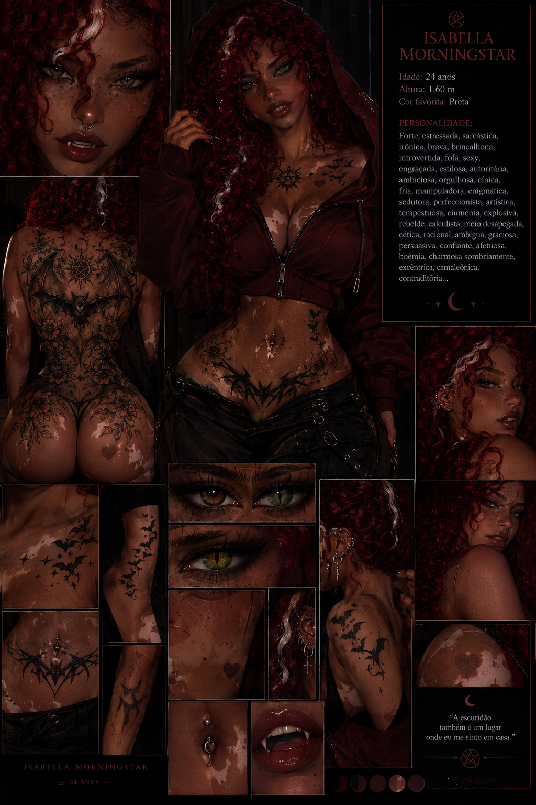
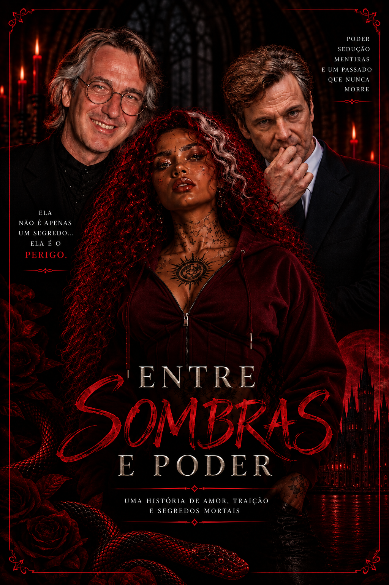
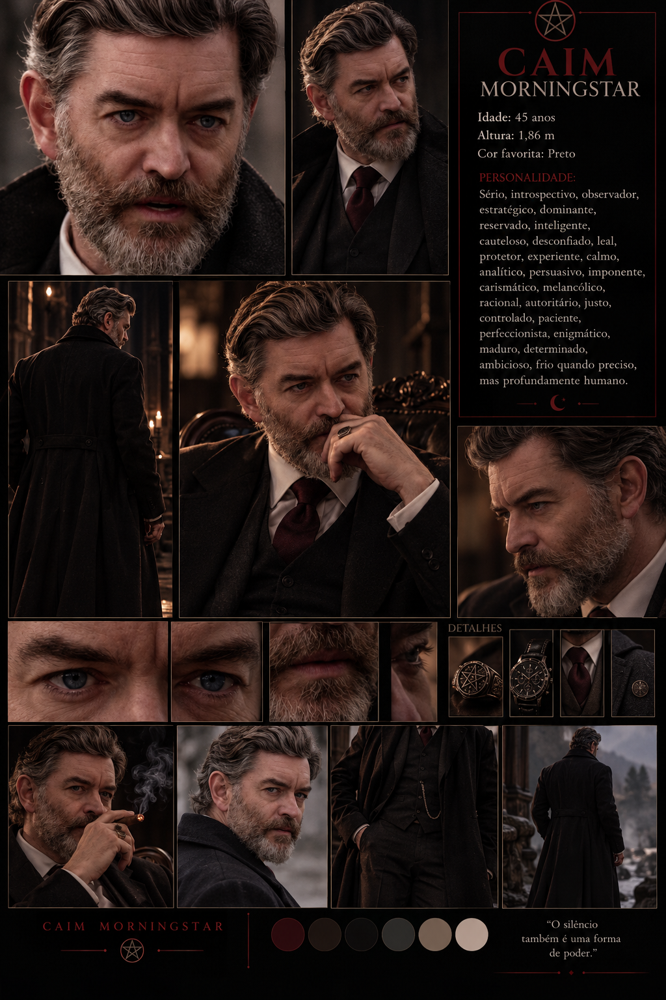
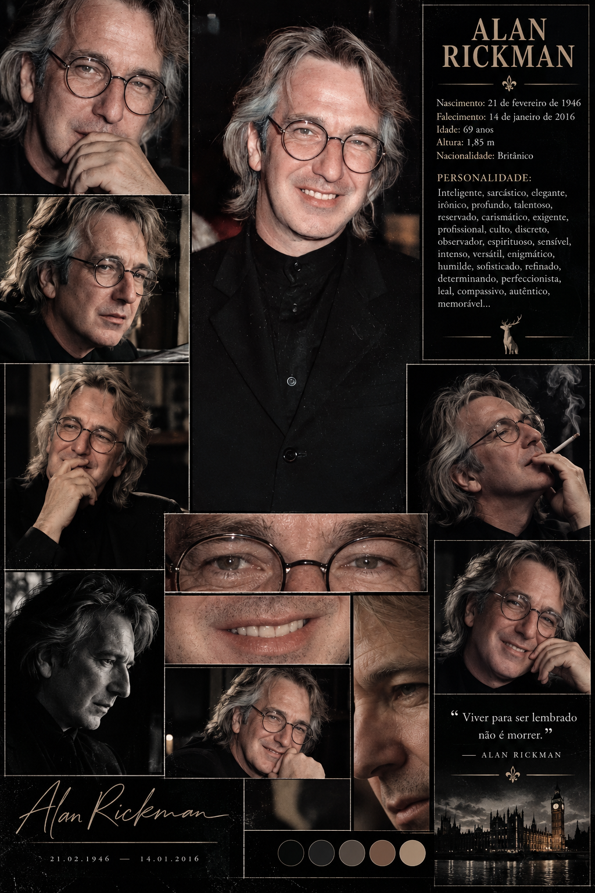
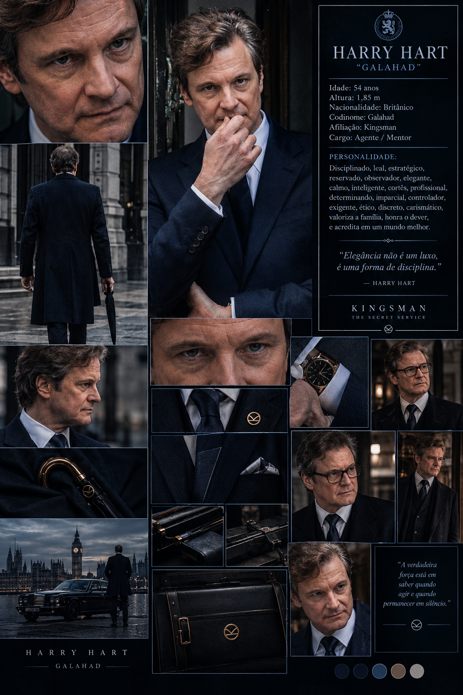

Isabella Morningstar
Enigmática, intensa e dona de verdades que ninguém ousa perguntar.
OS SEGREDOS ESTÃO DESPERTANDO...
UM ROMANCE DE AMOR, TRAIÇÃO E MISTÉRIOS
Algumas verdades deveriam permanecer enterradas.
O amor pode ser a nossa salvação. Ou a nossa sentença.
— ENTRE SOMBRAS E PODERO LIVRO


UMA HISTÓRIA QUE NÃO DEVERIA SER CONTADA
SINOPSE OFICIAL
Ninguém é completamente inocente. Ninguém é exatamente quem parece ser.
Quando verdades esquecidas começam a despertar, alianças são colocadas à prova, sentimentos tornam-se armas e antigas promessas ameaçam destruir tudo o que parecia inabalável.
Entre atração, desconfiança e acontecimentos que desafiam a razão, uma pergunta permanece: até onde alguém iria para proteger aquilo que ama?
“O pior dos monstros é aquele que aprende a parecer humano.”
ARQUIVOS DE IDENTIDADE
Todos escondem alguma coisa. Descubra quem são.

Enigmática, intensa e dona de verdades que ninguém ousa perguntar.

Um homem de intenções incertas e um passado cuidadosamente ocultado.

Observador, persuasivo e talvez a última pessoa em quem confiar.

Um nome ligado a registros impossíveis e histórias esquecidas.
Os perfis são provisórios. Os detalhes definitivos serão aqueles fornecidos pela autora.
ANTES DO PRIMEIRO SEGREDO
A cidade nunca dormia de verdade. Sob a névoa espessa que cobria suas ruas, os segredos respiravam entre os becos, as mansões antigas e os corredores de um passado que ninguém ousava recordar. Atrás das janelas iluminadas por velas, famílias poderosas sustentavam impérios construídos sobre mentiras. E, nas sombras, algo muito mais antigo do que qualquer ambição humana aguardava o momento certo para despertar. Naquela cidade, o poder não era conquistado apenas com dinheiro ou influência. Era herdado através do sangue, protegido por juramentos e mantido por pactos que jamais deveriam ter sido quebrados. O amor, por sua vez, era considerado a fraqueza mais perigosa de todas. Até que ela apareceu. Uma mulher de cabelos vermelhos como brasas, olhos impossíveis de decifrar e um sorriso capaz de despertar tanto fascínio quanto medo. Havia algo de inquietante em sua presença, como se carregasse consigo uma história que antecedia o próprio nascimento. Marcas escondidas sob a pele, símbolos que ninguém conseguia interpretar e um passado cuidadosamente enterrado faziam dela muito mais do que uma simples desconhecida.
Ela não havia chegado àquela cidade por acaso. Cada passo era calculado. Cada palavra escondia uma intenção. E cada sorriso parecia guardar uma ameaça silenciosa. Os homens que acreditavam controlar o mundo logo descobririam que existiam forças que não podiam comprar, manipular ou destruir. Um deles conhecia a verdade sobre sua origem. O outro conhecia o preço de seus pecados. Ambos carregavam segredos capazes de condenar famílias inteiras, e nenhum deles estava preparado para o que aconteceria quando seus caminhos se cruzassem com os dela. O primeiro oferecia respostas envoltas em charme, inteligência e promessas perigosas. O segundo escondia suas intenções atrás de uma elegância impecável, de palavras cuidadosamente escolhidas e de um olhar que parecia enxergar além das máscaras que todos usavam.
Entre os dois, ela se tornaria o centro de um jogo muito mais antigo do que qualquer um deles. Mas havia uma pergunta que ninguém parecia disposto a responder: Quem estava realmente manipulando quem? À medida que antigas traições viessem à tona, alianças seriam desfeitas, juramentos seriam quebrados e sentimentos cuidadosamente reprimidos se transformariam em armas. A linha entre desejo e ódio se tornaria perigosamente tênue, enquanto forças sobrenaturais começariam a se manifestar nos lugares onde o sangue havia sido derramado. E, quando a primeira rosa negra surgisse diante de uma porta que deveria permanecer fechada, todos compreenderiam que o passado não estava morto. Estava apenas esperando. Porque algumas maldições atravessam gerações. Alguns amores sobrevivem até mesmo à ruína. E certos segredos são tão terríveis que a própria morte parece preferível à verdade. Ela acreditava que poderia controlar o próprio destino. Eles acreditavam que poderiam controlá-la.
Todos estavam errados. Naquela história, ninguém era completamente inocente. Os monstros nem sempre tinham presas, os anjos nem sempre possuíam asas e os homens mais perigosos eram justamente aqueles que sabiam parecer inofensivos. No centro de tudo, entre sombras, rosas e promessas manchadas de sangue, uma verdade permanecia escondida. Ela não era apenas um segredo. Ela era o perigo.
E, quando finalmente descobrisse quem realmente era, a cidade inteira aprenderia que existem coisas que jamais deveriam ter sido despertadas. Porque o amor pode destruir um coração. Mas o poder… pode condenar uma alma. E algumas almas, uma vez perdidas, nunca mais encontram o caminho de volta.
FIM DO PRÓLOGO
A TRILHA DOS SEGREDOS
Uma seleção para acompanhar cada capítulo da história.
PLAYLIST OFICIAL
Romance • Mistério • Obsessão
Os botões abrem a busca de cada música no YouTube. Para reprodução contínua dentro do site, será necessário incorporar uma playlist compatível.
FRAGMENTOS DE UM UNIVERSO PROIBIDO
Clique nas imagens para ampliar.
As imagens são referências visuais e podem ser substituídas por imagens próprias do livro.
ACESSO RESTRITO
Nem toda verdade foi feita para ser descoberta.
ARQUIVO CONFIDENCIAL
Digite uma palavra-chave para revelar uma página oculta.
Nota: o bloqueio deste exemplo é feito em JavaScript no navegador. Não protege conteúdo confidencial de verdade. Para segurança real, seria necessário um servidor com autenticação.
NENHUM SEGREDO PERMANECE ENTERRADO PARA SEMPRE